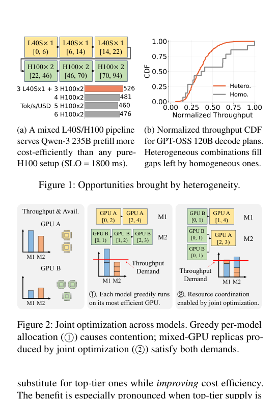
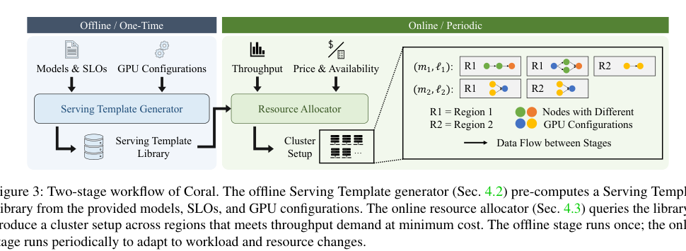
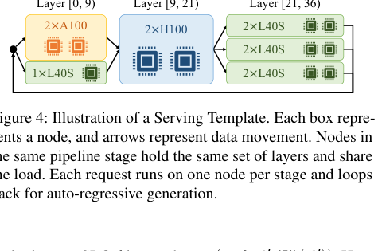
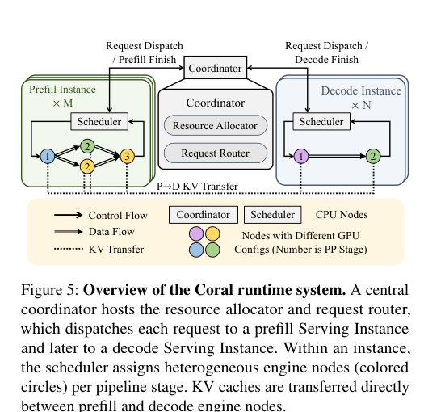
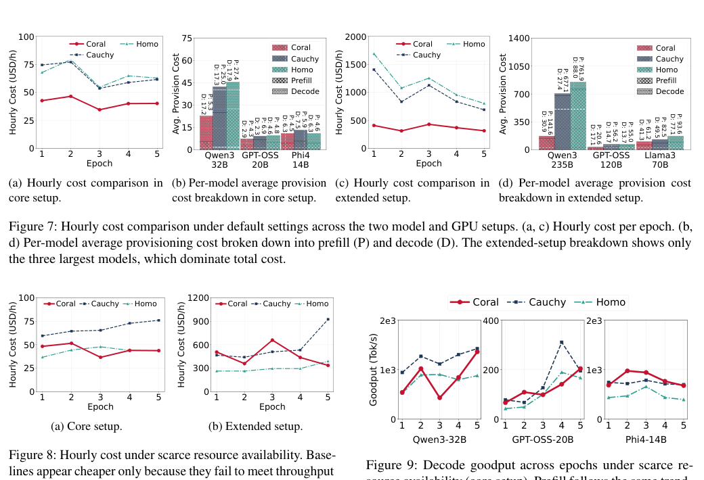

Coral：异构云 GPU 上的低成本多 LLM 服务中文翻译稿
摘要。Coral 研究异构云 GPU 上的多 LLM serving。现实中没有单一模型主导所有任务，服务商需要同时部署多个模型；云平台也提供从 L4、A10G、A100、L40S 到 H100 等多种价格、显存和吞吐能力不同的 GPU。Coral 的核心思想是联合优化资源分配和每个模型副本的 serving strategy：离线生成 Serving Template，在线 Resource Allocator 根据模型需求、SLO、价格和可用性选择最低成本资源组合。通过两阶段分解，Coral 在保持联合最优性的同时把在线求解从数小时降到几十秒。实验显示，Coral 在 6 个模型和 20 种 GPU 配置上可比最佳基线最多降低 2.79 倍成本，并在资源稀缺时提高 2.39 倍 goodput。
1 动机
LLM 服务越来越碎片化。不同模型家族和模型规模适合不同任务，实际平台往往同时服务几十个模型。与此同时，云 GPU 资源也高度异构：顶级 GPU 性能强但贵且供给紧张，中低端或旧代 GPU 更便宜、更容易获得，并且在某些模型或阶段上有更好的性能/成本比。
因此，多 LLM serving 不能只问“买多少块同一种 GPU”，而要同时决定：每个模型放在哪些 GPU 上，是否拆成不同 pipeline stage，prefill 和 decode 如何分配，怎样满足每个模型的吞吐需求和 latency SLO，并在价格和可用性变化时周期性重算。

2 两阶段设计
直接联合求解模型 placement 和资源 allocation 很难，因为节点组合、模型切分、SLO 和负载都在变化。Coral 的关键是把可复用部分离线化。Serving Template Generator 针对每个（model, SLO）枚举一组候选节点组合，并用优化器计算每种组合下可达到的吞吐和成本特征。在线阶段不再从零搜索所有部署方案，而是在预计算模板中挑选。

Serving Template 记录模型在异构节点上的执行布局。它可以表达不同 layer 或 pipeline stage 放在不同 GPU 上，节点之间有数据传输，多个请求按阶段流动。这样，online allocator 可以把模板看作“带吞吐能力和成本的候选服务单元”。

3 Runtime System
Coral runtime 把请求先分发到 prefill serving instance，再转到 decode serving instance。中心 coordinator 负责资源分配和请求路由；每个 serving instance 内部有 scheduler；KV cache 可以在 prefill 和 decode 阶段之间转移。这样的结构允许系统分别优化 prefill 密集和 decode 密集阶段，而不是把整个模型副本绑定在单一 GPU 类型上。

4 实验结果
实验覆盖多个模型、SLO、吞吐需求和云 GPU 配置，基线包括同构部署、Cauchy 等异构资源方案。Coral 在成本和 goodput 上均取得优势：当 GPU 充足时，它能以更低成本满足同样服务需求；当部分 GPU 稀缺或价格变化时，它能迁移到更合适的异构组合，保持更高 goodput。

5 局限与启发
Coral 主要处理多模型、多 GPU 配置和 SLO 下的资源优化，并不直接研究请求语义、agent workflow 依赖或模型回答质量。它的模板生成依赖离线 profiling 和候选组合枚举，若模型结构、硬件环境或负载分布变化很快，维护成本会上升。
对本仓库方向的意义。Coral 适合作为“异构硬件 placement + 多模型 serving + prefill/decode 分离”的系统参考。若后续研究 agent workflow，可把 Chimera/RouteLLM 的模型选择与 Coral 的资源模板结合起来：上层决定哪个阶段用哪个模型，下层决定该模型阶段放在哪类 GPU、如何转移 KV cache、如何满足 SLO。
参考说明
参考文献保留在原 PDF 中。本文覆盖摘要、问题背景、Serving Template、Resource Allocator、runtime、实验结果和研究启发。